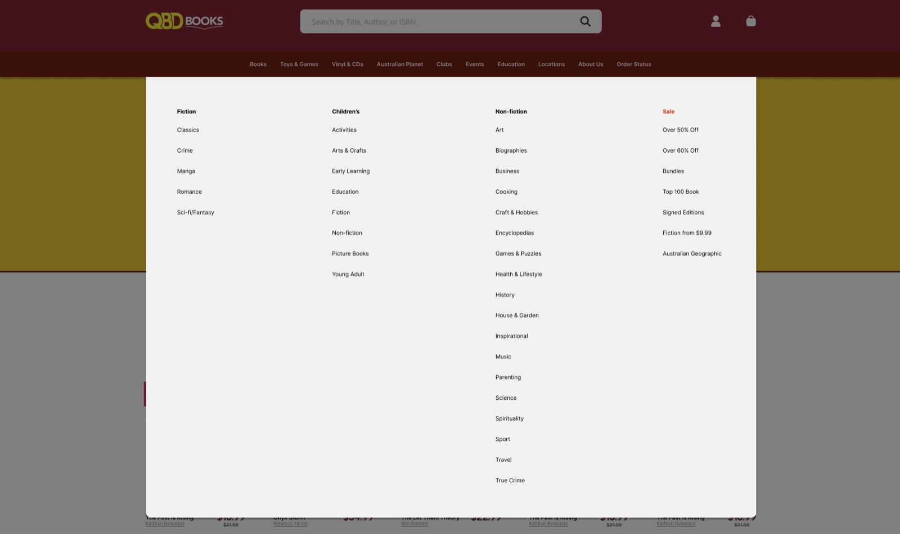
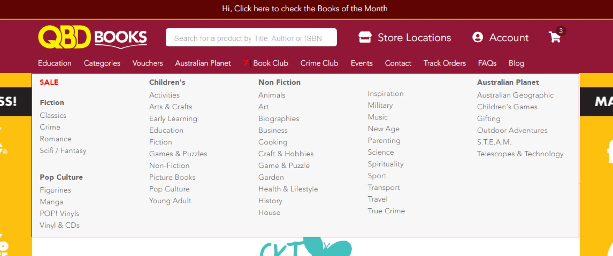
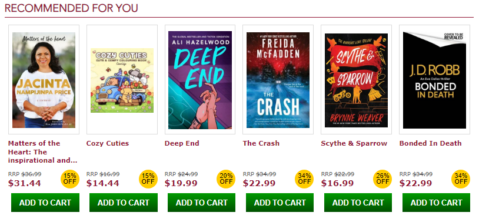
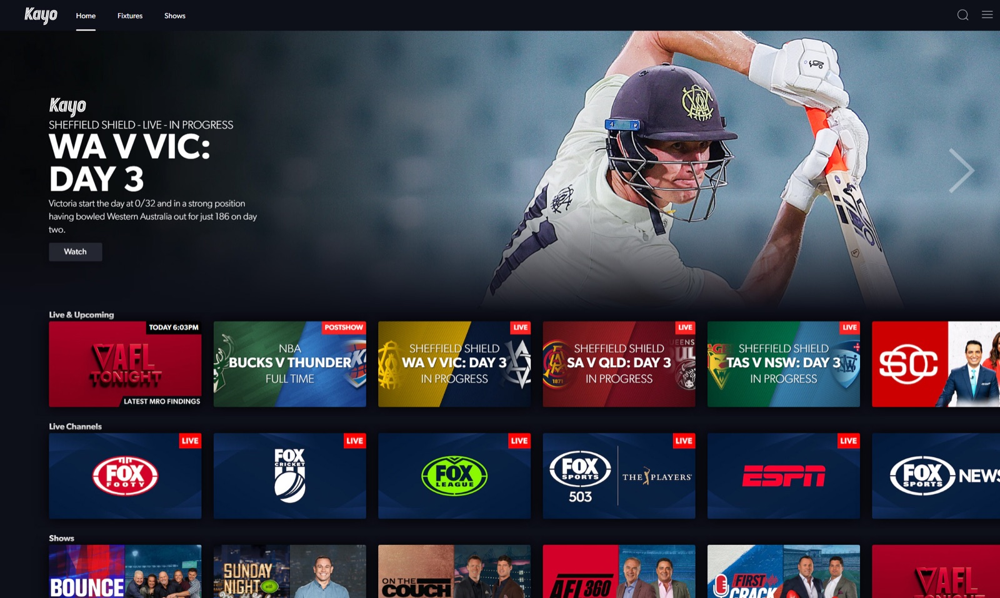
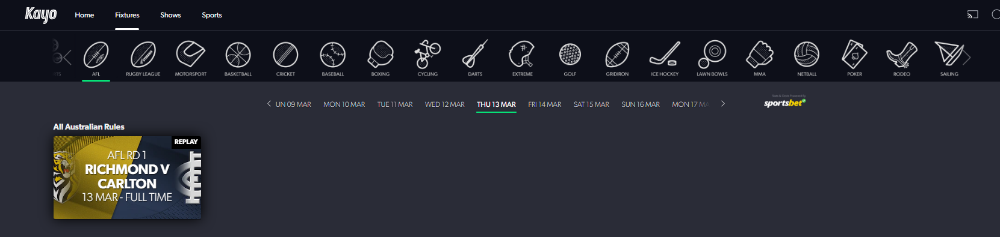
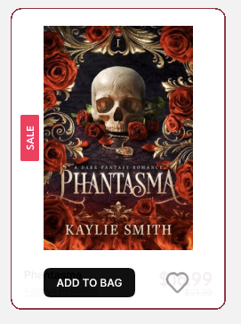
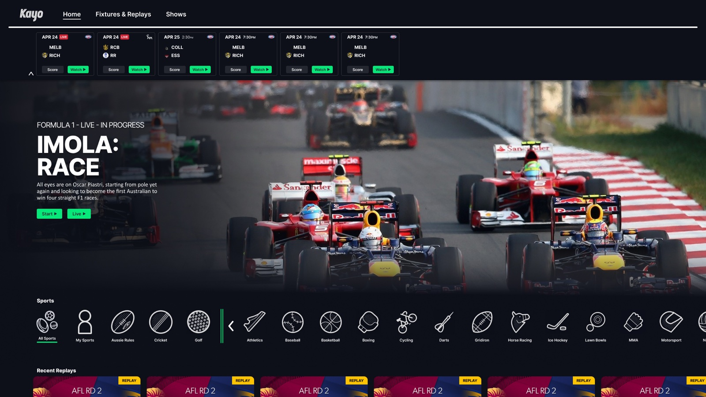

QBD & Kayo website redesign
I user-tested the QBD and Kayo websites, redesigned them in a Figma prototype, then retested with the same users to see what improved.

- My role
- User testing, UX/UI design and Figma prototyping
- Year
- 2025
- Tools
- Figma
This is a student case study. Screenshots of the original QBD Books and Kayo Sports websites are shown to explain the redesign, and the redesigns are my own concepts, not official work for either company.
The story behind it
Kayo Sports and QBD Books were the two sites that came to mind straight away, because I’d been frustrated by both in the past. I explored each one and completed its main tasks, searching and buying books on QBD, and streaming live sport and replays on Kayo. That quickly gave me a list of usability problems to test.
The brief
As part of Digital Media Studio 3, the project asked me to:
- Identify multiple problems with at least two existing websites or apps
- Describe those problems using established UX principles
- Document and validate the problems by running UX tests
- Redesign the interfaces to solve them
- Run UX tests on the redesign
- Compare the results of the redesigns against the existing designs
In practice that meant one round of user testing per site with one individual each, a redesign built as a Figma prototype, and a retest with the same two users.
Research & concept
Both sites broke two of Jakob Nielsen’s heuristics: aesthetic and minimalist design, and flexibility and efficiency of use (Fessenden 2021; Laubheimer 2020). QBD’s problems were mostly aesthetic, while Kayo’s were about navigation and personalisation.
To keep real needs in mind, I wrote personas for each site, such as Margaret, a 72-year-old retired librarian who wants a simple shopping experience and readable text, and Andrew, a 71-year-old retired landscaper who wants to watch F1, tennis and AFL and struggles with clutter.
QBD Books
- Poor use of space. Book tiles were cramped, so titles ran across several lines.
- Aesthetic inconsistencies. Adjacent sections used different buttons and price styles, and the New Releases books showed no titles at all.
- Outdated, obstructive look. Dated typography, gradients, boxy shapes and a fixed-width body.
Kayo Sports
- Inefficient navigation. The fixtures timeline shows nine dates at a time, so reaching last season’s AFL grand final takes at least twenty-five clicks.
- Unclear jargon. Highlights are called ‘Bites’ and ‘Minis’.
- Little personalisation. Kayo streams more than fifty sports, but the average user watches only three or four a month (Medcraf 2024).




Round one: testing the original sites
I tested an older person on each site, to see where people with limited computer experience struggle. Each session followed a script with background questions, tasks and probing questions, and was recorded with the participant’s permission.
QBD Books: what I found
- They spotted the search bar immediately, but struggled to read titles and authors, especially for unlabelled box sets.
- They found ‘Twilight’ but not ‘Chainsaw Man’, and couldn’t identify the author of either.
- They expected a Sale page in the navigation bar, and read the ‘SALE’ heading in the dropdown as meaning everything below it was on sale.
- They used the browser’s back button to get home, and hadn’t realised the logo or breadcrumbs would do it.
- They didn’t know author names were links, so they searched instead.
- Overall they found the site easy to use, and recommended showing the title and author as text on every book.
Kayo Sports: what I found
- They found live sport easily thanks to its labels, but weren’t sure which items were Pay Per View.
- They didn’t know ‘Bites’ and ‘Minis’ meant highlights.
- They couldn’t find content for their AFL team. The league dropdown was disconnected from the sports navigation, and they thought replays lived only on the Sports page, not Fixtures.
- They called the navigation “too much on it” and the site overwhelming, and wanted more personalisation and a way to filter by team and see matches by round.
- They missed the timeline carousel and the faded carousel arrows, and found the text under the sports icons hard to read. They did find the site fast and snappy.
The redesign
I built both redesigns as Figma prototypes, starting with general components that were easy to change as the testing findings came in.
QBD Books
- Header. I removed the books-of-the-month banner and the extra text, made the logo smaller, and put a larger, centred search bar with a button at the heart of the header, keeping QBD’s maroon branding.
- Book tiles. Every tile now has the same layout, with the price biggest, then the title, then a lighter author link. Sale, Pre-order and New labels are colour-coded, and item types like ‘Box set’ and stock status are shown. Add to bag and wishlist appear on hover only.
- Categories. The dropdown is now ‘Books’, with one column per category and more line spacing, so people scan across and then down.
- Pages. Promotions became one large rotating carousel, a clearer Home button and breadcrumbs help people who don’t realise the logo goes home, and the category page swaps the sidebar filter for dropdown buttons, so five books fit in a row instead of four.
Kayo Sports
- Sports navigation. The Sports page was folded into the home page, with favourites pinned to the left and an arrow to hide sports you don’t watch.
- Fixtures & Replays. The page is renamed so it’s clear it holds replays, and matches are found by year, round and team instead of a date carousel.
- Plain language. ‘Bites’ and ‘Minis’ became ‘Extended Highlights’ and ‘Short Highlights’.
- Scoreboards. Inspired by Optus Sport, live scores now sit on the home page. They respect Kayo’s ‘no spoilers’ setting by staying hidden until clicked.
- Small fixes. Pay Per View labels, dropdowns that visibly connect, clearer carousel arrows and bolder text under icons.


Round two: retesting with the same users
For each redesign I wrote a second script and ran it with the same two people. It repeated tasks from round one, such as reading titles and authors, finding other books by an author and returning home on QBD, and finding sports and last season’s replay on Kayo. It also added questions about the new features.
- QBD: find a book that is on sale, one on pre-order and one that’s new, and find the bag icon. Buy a hardcover, add a book to a wishlist, check the item really was added, choose a binding for a House & Garden book, and find another book by the same author without searching. I also asked about text readability, the ‘Sort by’ dropdown, the feedback after adding to bag, and whether the new item icons stood out.
- Kayo: find “soccer” in the sports navigation, explain what the arrow does, read the scoreboards, and tell live, upcoming, replay and highlight labels apart. Then search for an AFL team and watch a replay from last year.
Reflection
Some things I’m still not satisfied with. On the QBD book tiles, you can only tell an item is on your wishlist by hovering over it again. On Kayo, I wasn’t sure where the team filter belongs, since eighteen AFL clubs make a dropdown too long and a vertical list like the sports bar might work better.
I was also torn about the QBD home page. Borders around the books helped draw the eye, but they looked dated, so I removed them and used a single body colour, trusting the spacing to separate each book.
References
- Fessenden T (2021) Aesthetic and Minimalist Design (Usability Heuristic #8), Nielsen Norman Group
- Johnson J (2010) Designing with the Mind in Mind, Morgan Kaufmann Publishers
- Krug S (2014) Don’t Make Me Think, Revisited, 2nd edition, New Riders
- Laubheimer P (2020) Flexibility and Efficiency of Use (Usability Heuristic #7), Nielsen Norman Group
- Medcraf M (2024) Kicking bigger growth goals: Foxtel & Kayo Sports breaks AFL streaming record, Mi3